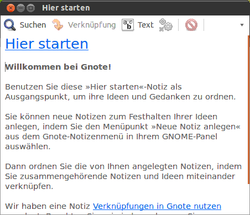
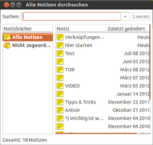

Gnote
Dieser Artikel wurde für die folgenden Ubuntu-Versionen getestet:
Ubuntu 16.04 Xenial Xerus
Ubuntu 14.04 Trusty Tahr
Zum Verständnis dieses Artikels sind folgende Seiten hilfreich:
Bei Gnote  handelt es sich um ein Desktop-Wiki, um Notizen zu verwalten. Das Programm ist eine Portierung von Tomboy auf C++, kommt also ohne die Laufzeitumgebung Mono aus. Es kann mit Plugins erweitert werden und verwendet das gleiche Format zur Speicherung wie Tomboy.
handelt es sich um ein Desktop-Wiki, um Notizen zu verwalten. Das Programm ist eine Portierung von Tomboy auf C++, kommt also ohne die Laufzeitumgebung Mono aus. Es kann mit Plugins erweitert werden und verwendet das gleiche Format zur Speicherung wie Tomboy.
Weitere ähnliche Programme finden sich im Artikel Notizen.
Installation¶
Das Programm ist in den offiziellen Paketquellen enthalten. Folgendes Paket muss installiert [1] werden:
gnote (universe)
 mit apturl
mit apturl
Paketliste zum Kopieren:
sudo apt-get install gnote
sudo aptitude install gnote
Verwendung¶
  Das Programm kann bei Ubuntu-Varianten mit einem Anwendungsmenü über "Zubehör -> Gnote" aufgerufen werden [2].
Direkt nach dem Start ist Gnote über einen gelben Notizzettel im Benachrichtigungsfeld des Panels verfügbar. Ab Version 0.8.2 lässt sich das Statussymbol in den Einstellungen an- und abschalten.
Da es sich nur um eine Portierung von Tomboy und keine Neuentwicklung handelt, gilt die Beschreibung zur Bedienung von Tomboy grundsätzlich auch für Gnote.
Da beide Programme das gleiche Format verwenden, ist eine Übernahme vorhandener Notizen leicht möglich. Die entsprechenden Dateien haben die Endung .note, aber der Speicherort ist unterschiedlich:
| Speicherort | ||
| Programm | Ubuntu-Version | Ordner |
| Gnote | bis 10.04 | ~/.gnote |
| ab 10.10 | ~/.local/share/gnote | |
| Tomboy | (alle) | ~/.local/share/tomboy |
Ein Austausch der Dateien in beiden Richtungen wird realisiert, in dem man diese in den jeweils passenden Ordner kopiert.
Plugins¶
Gnote bringt eigene Plugins zur Erweiterung der Funktionalität mit. Aufgrund der unterschiedlichen Voraussetzungen können Plugins von Tomboy nicht verwendet werden.
Hotkey - Windows (Meta/Super) Taste¶
Soll die Windows -Taste in einer Tastenkombination (Hotkey) verwendet werden, muss dies in der Einstellungszeile mit "<Super>" erfolgen, z. B. "<Super>N".
Problembehebung¶
 Übersichtsartikel
Übersichtsartikel- Erstellt mit Inyoka
-
 2004 – 2017 ubuntuusers.de • Einige Rechte vorbehalten
2004 – 2017 ubuntuusers.de • Einige Rechte vorbehalten
Lizenz • Kontakt • Datenschutz • Impressum • Serverstatus -
Serverhousing gespendet von